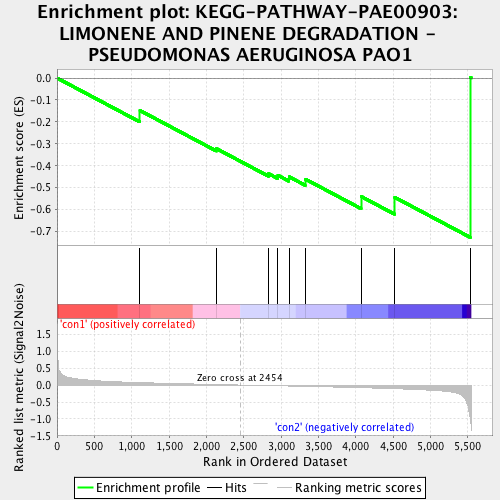
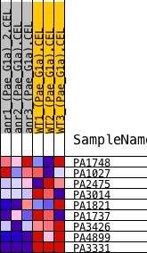
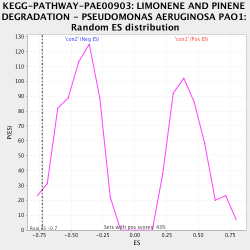

| | | Dataset | Anr_gene.AnrvsWT.cls#con1_versus_con2 |
| Phenotype | AnrvsWT.cls#con1_versus_con2 |
| Upregulated in class | con2 |
| GeneSet | KEGG-PATHWAY-PAE00903: LIMONENE AND PINENE DEGRADATION - PSEUDOMONAS AERUGINOSA PAO1 |
| Enrichment Score (ES) | -0.7267483 |
| Normalized Enrichment Score (NES) | -1.6107134 |
| Nominal p-value | 0.040069688 |
| FDR q-value | 0.18619354 |
| FWER p-Value | 0.922 |
Table: GSEA Results Summary

Fig 1: Enrichment plot: KEGG-PATHWAY-PAE00903: LIMONENE AND PINENE DEGRADATION - PSEUDOMONAS AERUGINOSA PAO1
Profile of the Running ES Score & Positions of GeneSet Members on the Rank Ordered List
| PROBE | DESCRIPTION
(from dataset) | GENE SYMBOL | GENE_TITLE | RANK IN GENE LIST | RANK METRIC SCORE | RUNNING ES | CORE ENRICHMENT | | 1 | PA1748 | na | | | 1110 | 0.072 | -0.1481 | No |
| 2 | PA1027 | na | | | 2134 | 0.015 | -0.3217 | No |
| 3 | PA2475 | na | | | 2833 | -0.016 | -0.4361 | No |
| 4 | PA3014 | na | | | 2956 | -0.021 | -0.4431 | No |
| 5 | PA1821 | na | | | 3107 | -0.028 | -0.4500 | No |
| 6 | PA1737 | na | | | 3325 | -0.039 | -0.4608 | No |
| 7 | PA3426 | na | | | 4073 | -0.077 | -0.5401 | No |
| 8 | PA4899 | na | | | 4521 | -0.107 | -0.5435 | Yes |
| 9 | PA3331 | na | | | 5537 | -1.008 | 0.0020 | Yes |
Table: GSEA details [plain text format]

Fig 2: KEGG-PATHWAY-PAE00903: LIMONENE AND PINENE DEGRADATION - PSEUDOMONAS AERUGINOSA PAO1
Blue-Pink O' Gram in the Space of the Analyzed GeneSet

Fig 3: KEGG-PATHWAY-PAE00903: LIMONENE AND PINENE DEGRADATION - PSEUDOMONAS AERUGINOSA PAO1: Random ES distribution
Gene set null distribution of ES for KEGG-PATHWAY-PAE00903: LIMONENE AND PINENE DEGRADATION - PSEUDOMONAS AERUGINOSA PAO1